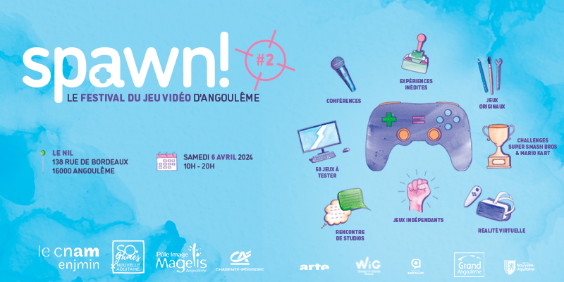

Quand ? Le 6 Avril 2024!
Où ? A l'ENJMIN dans le bâtiment du Nil!
Venez participer au Festival du Jeu Vidéo d'Angoulême spawn! Le Festival propose de nombreuses activités, VR, expériences, challenges, jeux indépendants, conférences sur la culture vidéoludique. SPAWN! c'est le festival des cultures ludiques d'Angoulême.
👉 INSCRIPTION
participer
L'entrée de spawn! est gratuite, ouvert à tous et toutes sur réservation dans la limite des places disponibles. Les places peuvent être obtenues sur l'
eventbrite de la manifestation
Si il reste des places sur place vous serez accueillis mais il vaut mieux réserver.
programme
Conférences animés par Dolly Wood et Quineapple👑🍎
- 11h "La place du jeu vidéo au sein de la famille" par Diraen Producer chez DON'T NOD et Bloggueuse,Vanessa Lalo, Psychologue Spécialiste et Tanguy TAILLANDIER, Ludothécaire
- 12h "Être une joueuse compétitive en 2024" par Amelitha, Joueuse compétitive de SF6
- 14h "Apprendre l'histoire à travers le jeu vidéo" par William BROU de Histoire en jeux et Laëtitia VETERAN-MARIE-CATHERINE
- 15h "Démontage de scènes sexistes du jeu vidéo" par Jennifer LUFAU d'Afrogameuses
- 16h "Le jeu d'horreur peut-il se renouveler ?" par Julie LE BARON de CanardPC et Dolly Wood, Créatrice de contenu
- 17h le Cosy Corner par Medoc et Moguri, chroniquers et journalistes
- 18h30 Début des Performances live mêlant JV et les autres Arts. Plus de détails à venir.
Challenges et espace famille : Super Smash Bros, Mario Kart, Tekken 8, Windjammers 2, Just Dance
Jeux indés : venez découvrir des jeux marrant, étranges, nouveaux, modernes, barrés et rencontrez leur équipe. Des jeux de toutes la France et de l'ENJMIN sont représentés.
Selection du festival : des jeux sortis récemment, choisis avec soin et amour exposés dans de bonnes conditions, organisé en zones. Ce sont souvent des jeux qui n'ont pas encore trouvé un public ou qui doivent être joués tout simplement! Sont d'ores et déjà annoncés :
- City Ambulance par Manufacture43
- Stray Shot par Punkcake Délicieux
- Furyball par ReboundCG
- Cybel par Indibutable
- Minami Lane par DOOT
- Bretagne par DISTANT SHORE
- End of lines par Nova-box
- Me And My witches par Sophie Lavergne
- Dissimilar par Opal Grave Games
- Maelstrom Legacy par Wistfulware
- DunG03ns par Milia Barrière
- Blue Bird Song par Purple Meadows
- et d'autres à venir...
Les zones Selection cette année : VR, Intimiste, Ecolo, Expériences, Longplay, Horreur, Grand Public.
Merci à nos partenaires : Arte, CNAM-Enjmin, SO·Games, Magelis, la Région Nouvelle-Aquitaine, Grand Angoulême, Rives2Charente,Gamers Generation, l'AAJH, le Gros Corbeau. Les médiathèque du Grand Angoulême, L'Alpha et aux équipes de spawn!.
L’association SO· Games
Dénomination sociale : SO· GAMES Siret : 50539681200024
Forme juridique : Association loi 1901
Code activité : Autres organisations fonctionnant par adhésion volontaire (9499Z)
TVA intracommunautaire: FR35505396812
Adresse : 12 PL DE LA BOURSE 33000 BORDEAUX
Président de l’association : David Elahee
Création et développement du site : David "Blackmagic" Elahee
Hébergement : Ce site est hébergé par le CNAM-Enjmin.
Tout droit réservés 2017-2024 - CNAM-Enjmin et SO·Games.